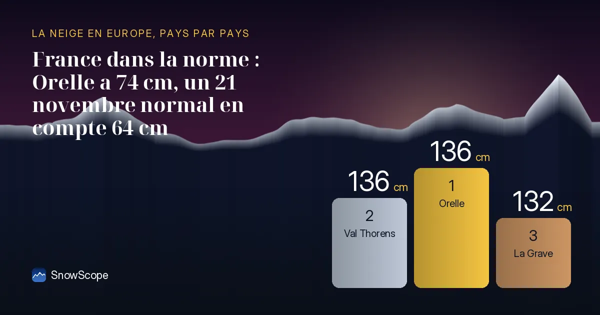
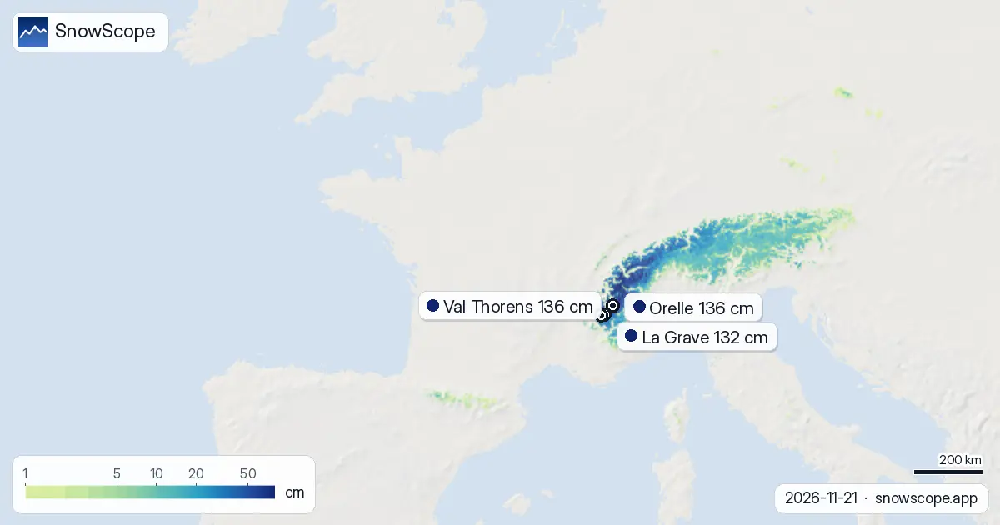

France dans la norme : Orelle a 74 cm, un 21 novembre normal en compte 64 cm
Orelle a 74 cm vers 2 780 m aujourd'hui, proche des 64 cm d'un 21 novembre normal.
Consultez les prévisions neige en temps réel pour Orelle sur l'application SnowScopeHauteurs de neige, alertes poudreuse et carte 3D, gratuitement.
Là où il est d'habitude
Ni cadeau ni inquiétude : la saison suit son chemin habituel, et les prochaines perturbations décideront de la vitesse à laquelle le bas se remplit.
12 530 km² de terrain enneigé en France ce samedi, 1 160 km² perdus depuis hier. Cela représente 14 % du relief cartographié en France.
| Station | Aujourd'hui | Normale à cette date | Part de la normale |
|---|---|---|---|
| Orelle | 74 cm | 64 cm | 116 % |
| Val Thorens | 104 cm | 43 cm | 242 % |
| La Grave | 86 cm | 80 cm | 108 % |
| Les Deux Alpes | 34 cm | 28 cm | 121 % |
| Alpe d'Huez Grand Domaine | 37 cm | 24 cm | 154 % |

Comment ce début se situe
Voici comment les stations les plus enneigées se situent par rapport à leur 21 novembre habituel : Orelle : 74 cm vers 2 780 m, contre 64 cm une année normale; Val Thorens : 104 cm vers 2 474 m, contre 43 cm une année normale; La Grave : 86 cm vers 3 370 m, contre 80 cm une année normale; Les Deux Alpes : 34 cm vers 2 398 m, contre 28 cm une année normale.
4 de ces 4 stations sont au-dessus de leur hauteur habituelle à cette date.
Ces hauteurs valent pour une altitude donnée de chaque montagne, sous le sommet : elles sont donc plus basses que les chiffres du haut des pistes plus loin.
Les hivers passés, la meilleure neige à Orelle arrivait d'habitude début mars / mi-mars.

Où skier en premier
En tête de liste, Orelle affiche 136 cm.
Juste derrière : Val Thorens (136 cm), La Grave (132 cm), Les Deux Alpes (102 cm) et Alpe d'Huez Grand Domaine (92 cm).
À Orelle : 105 cm de neige fraîche en trois jours, 88 cm de plus attendus d'ici mardi 24 novembre.
À Val Thorens : 105 cm de neige fraîche en trois jours, 88 cm de plus attendus d'ici mardi 24 novembre.
155 des 223 stations suivies en France ont de la neige sur le haut du domaine.
Le reste de la sélection : La Grave : 132 cm en haut, 92 cm en trois jours, 90 cm attendus; Les Deux Alpes : 102 cm en haut, 64 cm en trois jours, 72 cm attendus; Alpe d'Huez Grand Domaine : 92 cm en haut, 84 cm en trois jours, 89 cm attendus.
De la neige en route ?
Sur les trois prochains jours, jusqu'à 66 cm sont attendus, et jusqu'à 92 cm sur la semaine.
Le dimanche 22 novembre se détache, avec jusqu'à 55 cm en une journée.
La deuxième semaine ajoute jusqu'à 28 cm là où il neige le plus.
Sept jours de couverture neigeuse
La couverture neigeuse en France ces derniers jours : 16 novembre 9 450 km²; 17 novembre 8 670 km²; 18 novembre 8 560 km²; 19 novembre 11 870 km²; 20 novembre 12 730 km²; 21 novembre 12 530 km².
La station la plus enneigée a changé 4 fois cette semaine.
Hauteur de neige selon l'altitude
Plus on monte, plus la neige est épaisse : 1 000-1 500 m : en moyenne 1 cm (8 % du sol blanc); 1 500-2 000 m : en moyenne 6 cm (48 % du sol blanc); 2 000-2 500 m : en moyenne 16 cm (75 % du sol blanc); au-dessus de 2 500 m : en moyenne 44 cm (95 % blanc).
Conditions de ski
La neige fraîche rafraîchit le haut des pistes ; plus bas, elle peut déjà être lourde ou mouillée.
Avec de la neige annoncée, les prochains jours devraient encore améliorer la situation.
La couverture neigeuse du jour
Sous 1 700 m environ, les pentes sont surtout vertes ou brunes. Les 9 010 km² de la semaine dernière ont augmenté de 3 520 km².
Les dernières chutes
Le massif du Mont-Blanc, les Alpes du Nord et les Alpes du Sud ont reçu le plus de neige fraîche en trois jours, jusqu'à 77 cm.
En une journée, jusqu'à 8 cm se sont ajoutés.
Environ 11 610 km² ont reçu au moins 5 cm.
Les voisins aujourd'hui
Pour comparer, les voisins le même jour : Suisse : 64 % de blanc, Anzère en tête avec 86 cm, jusqu'à 74 cm dans la semaine; Italie : 26 % de blanc, Pfelders en tête avec 118 cm, jusqu'à 62 cm dans la semaine.
Préparer une journée sur la neige
Au-dessus de 2 500 m, le sol est presque entièrement blanc (95 % couvert) : les pistes y ont une sous-couche continue.
Entre 1 500 m et 2 500 m, la couverture est irrégulière, environ 48 % de blanc : herbe et cailloux entre les plaques.
Sous 1 500 m, les pentes sont encore presque nues.
Si vous pouvez choisir le jour, partez après le dimanche 22 novembre : la neige fraîche aura le temps de se tasser et les routes d'être dégagées.
Conseils aux skieurs
- Après une nuit claire, la neige est dure le matin : attendez le soleil sur les faces sud.
- Les routes des stations d'altitude peuvent exiger pneus hiver ou chaînes.
- Au-dessus de la forêt, la neige peut être ventée : attention aux crêtes.
À propos de ces chiffres
Les hauteurs de neige des stations sont la neige la plus épaisse sur le haut du domaine, d'après le modèle de neige SnowScope (environ 1 km, calcul du 21 novembre) ; ce sont des estimations pour une zone, pas une mesure en un point. Les valeurs des stations de mesure sont mesurées à la date indiquée. Les prévisions peuvent changer. Consultez toujours le bulletin d'avalanche officiel avant le hors-piste.
Citer ce bulletin
Pour la recherche, l'enseignement ou la presse : chiffres et graphiques réutilisables librement sous CC BY 4.0 avec cette citation.
SnowScope (2026), France dans la norme : Orelle a 74 cm, un 21 novembre normal en compte 64 cm, https://snowscope.app/blog/fr/2026/11/france-snow-on-schedule-21-november-2026.html, consulté le 2026-11-21
SnowScope (Atlas Labs). (2026, November 21). France dans la norme : Orelle a 74 cm, un 21 novembre normal en compte 64 cm. SnowScope snow reports. https://snowscope.app/blog/fr/2026/11/france-snow-on-schedule-21-november-2026.html
BibTeX
@misc{snowscope2026francesnowonschedule21no,
author = {{SnowScope (Atlas Labs)}},
title = {France dans la norme : Orelle a 74 cm, un 21 novembre normal en compte 64 cm},
year = {2026},
month = nov,
howpublished = {\url{https://snowscope.app/blog/fr/2026/11/france-snow-on-schedule-21-november-2026.html}},
note = {Published 2026-11-21 12:22 UTC; accessed 2026-11-21}
}· CC BY 4.0 · Méthodes, données et outils →
Orelle : neige et température selon l'altitude, cet hiver vs l'hiver dernier (outils) →
Suivre Orelle
Gratuit : un message quand la neige arrive, et la météo chaque matin.